Chapter 9. 在Web控制台中管理存储设备
您可以使用RHEL 8 Web控制台配置物理和虚拟存储设备。本章提供了有关这些设备的说明：
- 已安装的NFS
- 逻辑卷
- 袭击
- VDO
已安装RHEL 8 Web控制台。
有关详细信息，请参阅安装Web控制台 。
RHEL 8 Web控制台使您可以使用网络文件系统（NFS）协议安装远程目录。
NFS可以访问和安装位于网络上的远程目录，并使用这些文件，就像目录位于物理驱动器上一样。
先决条件
- NFS服务器名称或IP地址。
- 远程服务器上目录的路径。
以下步骤旨在帮助您使用NFS将远程目录连接到文件系统。
先决条件
- NFS服务器名称或IP地址。
- 远程服务器上目录的路径。
程序
登录RHEL 8 Web控制台。
有关详细信息，请参阅登录Web控制台 。
- 单击存储 。
单击NFS挂载部分中的+ 。

- 在“ 新建NFS挂载”对话框中，输入远程服务器的服务器或IP地址。
- 在“ 服务器上的路径”字段中，输入要装入的目录的路径。
- 在“ 本地挂载点”字段中，输入要在本地系统中查找目录的路径。
- 选择启动时安装 。这可确保在重新启动本地系统后也可以访问该目录。
（可选）如果您不想更改内容，请选择“ 仅读” 。

- 单击添加 。
此时，您可以打开已安装的目录并验证该内容是否可访问。
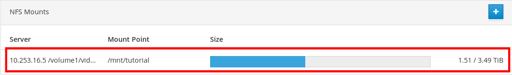
要对连接进行故障排除，可以使用“ 自定义安装选项”进行调整。
以下部分提供有关如何编辑现有NFS装入的信息，并显示添加自定义装入选项的位置。
自定义安装选项可以帮助您排除连接故障或更改NFS安装的参数，例如更改超时限制或配置身份验证。
先决条件
- 添加了NFS安装。
程序
登录RHEL 8 Web控制台。
有关详细信息，请参阅登录Web控制台 。
- 单击存储 。
- 单击要调整的NFS挂载。
如果已装入远程目录，请单击“ 卸载” 。
在自定义安装选项配置期间，不得装入该目录。否则，Web控制台不会保存配置，这将导致错误。
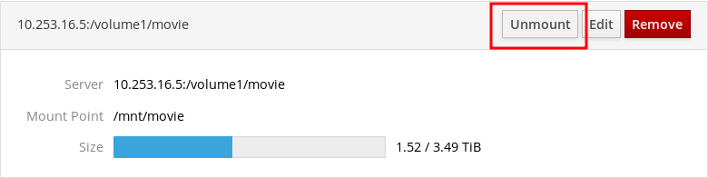
单击编辑 。

- 在“ NFS Mount”对话框中，选择“ Custom mount”选项 。
输入以逗号分隔的挂载选项。例如：
-
nfsvers=4- NFS协议版本号 -
soft- NFS请求超时后的恢复类型 -
sec=krb5- 可以通过Kerberos身份验证来保护NFS服务器上的文件。NFS客户端和服务器都必须支持Kerberos身份验证。

有关NFS装入选项的完整列表，请在命令行中输入
man nfs。-
- 单击“ 应用”
- 单击Mount 。
现在，您可以打开已安装的目录并验证内容是否可访问。
冗余独立磁盘阵列（RAID）代表了如何将更多磁盘安排到一个存储中的方法。
RAID使用以下数据分发策略保护存储在磁盘中的数据免受磁盘故障的影响：
- 镜像 - 将数据复制到两个不同的位置。如果一个磁盘发生故障，您就有一个副本，并且您的数据不会丢失。
- 条带化 - 数据均匀分布在磁盘中。
保护级别取决于RAID级别。
RHEL Web控制台支持以下RAID级别：
- RAID 0（条纹）
- RAID 1（镜像）
- RAID 4（专用奇偶校验）
- RAID 5（分布式奇偶校验）
- RAID 6（双分布式奇偶校验）
- RAID 10（镜子条纹）
在RAID中使用磁盘之前，您需要：
- 创建RAID。
- 用文件系统格式化它。
- 将RAID挂载到服务器。
RHEL 8 Web控制台正在运行且可访问。
有关详细信息，请参阅安装Web控制台 。
此过程旨在帮助您在RHEL 8 Web控制台中配置RAID。
先决条件
- 连接到系统的物理磁盘。每个RAID级别都需要不同数量的磁盘。
程序
- 打开RHEL 8 Web控制台。
- 单击存储 。
单击“ RAID设备”框中的+图标。

- 在“ 创建RAID设备”对话框中，输入新RAID的名称。
- 在“ RAID级别”下拉列表中，选择要使用的RAID级别。
在“ 块大小”下拉列表中，保留预定义的值。
块大小值指定每个块用于数据写入的大小。如果块大小为512 KiB，则系统将第一个512 KiB写入第一个磁盘，第二个512 KiB写入第二个磁盘，第三个块将写入第三个磁盘。如果RAID中有三个磁盘，则第四个512 KiB将再次写入第一个磁盘。
选择要用于RAID的磁盘。
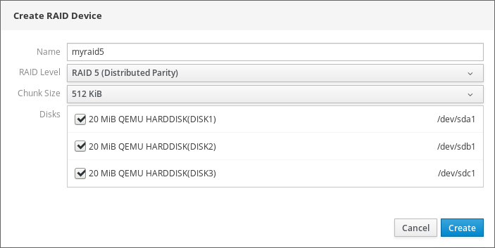
- 单击“ 创建”
在“ 存储”部分中，您可以在“ RAID设备”框中看到新RAID并对其进行格式化。

现在，您可以使用以下选项在Web控制台中格式化和装载新RAID：
本节介绍在RHEL 8 Web界面中创建的新软件RAID设备的格式化过程。
先决条件
- 物理磁盘由RHEL 8连接并可见。
- RAID已创建。
- 考虑将用于RAID的文件系统。
- 考虑创建分区表。
程序
- 打开RHEL 8 Web控制台。
- 单击存储 。
- 在“ RAID设备”框中，单击要选择要格式化的RAID。
- 在RAID详细信息屏幕中，向下滚动到“ 内容”部分。
单击新创建的RAID。

- 单击“ 格式”按钮。
在“ 擦除”下拉列表中，选择：
- 不要覆盖现有数据 - RHEL Web控制台仅重写磁盘头。此选项的优点是格式化速度。
- 用零覆盖现有数据 - RHEL Web控制台用零重写整个磁盘。此选项较慢，因为程序必须通过整个磁盘。如果RAID包含任何数据并且您需要重写它，请使用此选项。
- 在“ 类型”下拉列表中，如果您没有其他强烈的首选项，请选择XFS文件系统。
- 输入文件系统的名称。
在“ 安装”下拉列表中，选择“ 自定义” 。
“ 默认”选项无法确保在下次引导时安装文件系统。
- 在“ 挂载点”字段中，添加装载路径。
- 选择启动时安装 。 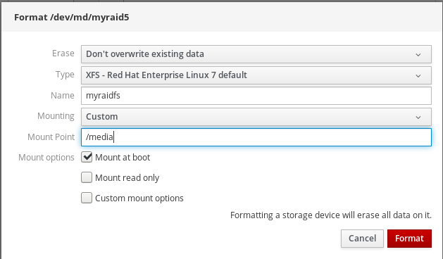
单击“ 格式”按钮。
格式化可能需要几分钟，具体取决于使用的格式化选项和RAID大小。
成功完成后，您可以在“ 文件系统”选项卡上查看格式化RAID的详细信息。
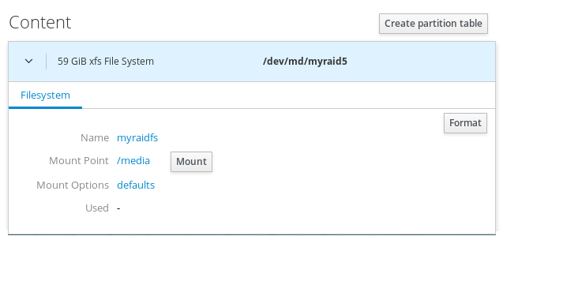
- 要使用RAID，请单击“ 安装” 。
此时，系统使用已安装和格式化的RAID。
RAID需要格式化为任何其他存储设备。您有两种选择：
- 格式化没有分区的RAID设备
- 使用分区创建分区表
本节介绍使用RHEL 8 Web界面中创建的新软件RAID设备上的分区表格式化RAID。
先决条件
- 物理磁盘由RHEL 8连接并可见。
- RAID已创建。
- 考虑用于RAID的文件系统。
- 考虑创建分区表。
程序
- 打开RHEL 8 Web控制台。
- 单击存储 。
- 在“ RAID设备”框中，选择要编辑的RAID。
- 在RAID详细信息屏幕中，向下滚动到“ 内容”部分。
单击新创建的RAID。
- 单击“ 创建分区表”按钮。
在“ 擦除”下拉列表中，选择：
- 不要覆盖现有数据 - RHEL Web控制台仅重写磁盘头。此选项的优点是格式化速度。
- 用零覆盖现有数据 - RHEL Web控制台用零重写整个RAID。此选项较慢，因为程序必须通过整个RAID。如果RAID包含任何数据并且您需要重写它，请使用此选项。
在“ 分区”下拉列表中，选择：
- 兼容现代系统和硬盘> 2TB（GPT） - GUID分区表是一种现代推荐的分区系统，适用于具有四个以上分区的大型RAID。
兼容所有系统和设备（MBR） - 主引导记录适用于最大2 TB的磁盘。MBR还支持最多四个主分区。
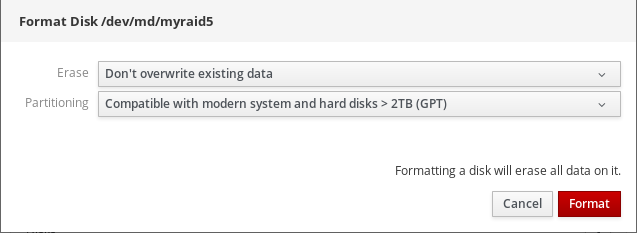
- 单击格式 。
此时，已创建分区表，您可以创建分区。
有关创建分区的信息，请参阅使用Web控制台在RAID上创建分区 。
本节介绍如何在现有分区表中创建分区。
先决条件
创建分区表。
有关详细信息，请参阅“使用Web控制台在RAID上创建分区表”一节
程序
- 打开RHEL 8 Web控制台。
- 单击存储 。
- 在“ RAID设备”框中，单击要编辑的RAID。
- 在RAID详细信息屏幕中，向下滚动到“ 内容”部分。
- 单击新创建的RAID。
- 单击“ 创建分区” 。
- 在“ 创建分区”对话框中，设置第一个分区的大小。
在“ 擦除”下拉列表中，选择：
- 不要覆盖现有数据 - RHEL Web控制台仅重写磁盘头。此选项的优点是格式化速度。
- 用零覆盖现有数据 - RHEL Web控制台用零重写整个RAID。此选项较慢，因为程序必须通过整个RAID。如果RAID包含任何数据并且您需要重写它，请使用此选项。
- 在“ 类型”下拉列表中，如果您没有其他强烈的首选项，请选择XFS文件系统。
- 输入文件系统的任何名称。不要在名称中使用空格。
在“ 安装”下拉列表中，选择“ 自定义” 。
“ 默认”选项无法确保在下次引导时安装文件系统。
- 在“ 挂载点”字段中，添加装载路径。
- 选择启动时安装 。
单击创建分区 。

格式化可能需要几分钟，具体取决于使用的格式化选项和RAID大小。
成功完成后，您可以继续创建其他分区。
此时，系统使用已安装和格式化的RAID。

Red Hat Enterprise Linux 8支持LVM逻辑卷管理器。安装Red Hat Enterprise Linux 8时，它将安装在安装期间自动创建的LVM上。

屏幕截图显示了RHEL 8系统的全新安装，其中在安装期间自动创建的RHEL 8 Web控制台中有两个逻辑卷。
要了解有关逻辑卷的更多信息，请按以下部分描述：
RHEL 8 Web控制台提供了一个图形界面，用于创建LVM卷组和逻辑卷。
卷组在物理卷和逻辑卷之间创建一个层。它使您可以在不影响逻辑卷本身的情况下添加或删除物理卷。卷组显示为一个驱动器，其容量由组中包含的所有物理驱动器的容量组成。
您可以在Web控制台中将物理驱动器加入卷组。
逻辑卷充当单个物理驱动器，它构建在系统中的卷组之上。
逻辑卷的主要优点是：
- 比物理驱动器上使用的分区系统更灵活。
- 能够将更多物理驱动器连接到一个卷。
- 可以在线扩展（增长）或减少（缩小）卷的容量，而无需重新启动。
- 能够创建快照。
其他资源
- 有关详细信息，请参阅配置和管理逻辑卷 。
以下介绍如何从一个或多个物理驱动器或其他存储设备创建卷组。逻辑卷是从卷组创建的。
每个卷组可以包含多个逻辑卷。
有关详细信息，请参阅卷组 。
先决条件
- 要从中创建卷组的物理驱动器或其他类型的存储设备。
程序
- 登录RHEL 8 Web控制台。
- 单击存储 。
单击“ 卷组”框中的+图标。

- 在“ 名称”字段中，输入不带空格的组的名称。
选择要组合的驱动器以创建卷组。
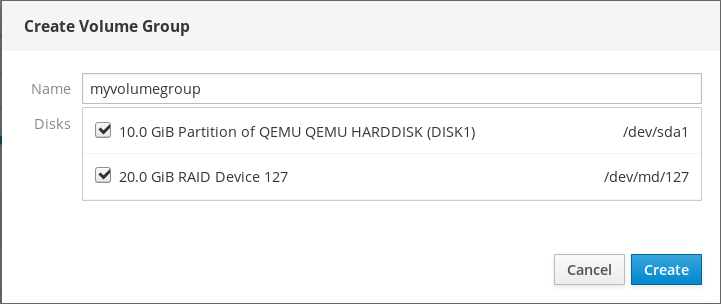
您可能无法按预期看到设备。RHEL Web控制台仅显示未使用的块设备。用过的设备意味着，例如：
- 使用文件系统格式化的设备
- 另一个卷组中的物理卷
物理卷是另一个软件RAID设备的成员
如果您没有看到该设备，请将其格式化为空并且未使用。
- 单击“ 创建”
Web控制台在“ 卷组”部分中添加卷组 。单击该组后，您可以创建从该卷组分配的逻辑卷。
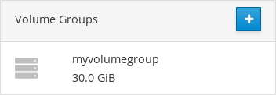
以下步骤描述了如何创建LVM逻辑卷。
先决条件
- 卷组已创建。有关详细信息，请参阅在Web控制台中创建卷组 。
程序
- 登录RHEL 8 Web控制台。
- 单击存储 。
- 单击要在其中创建逻辑卷的卷组。
- 单击“ 创建新逻辑卷” 。
- 在“ 名称”字段中，输入不包含空格的新逻辑卷的名称。
在目的下拉菜单中，选择阻止文件系统的设备 。
通过此配置，您可以创建一个逻辑卷，其最大卷大小等于卷组中包含的所有驱动器的容量总和。
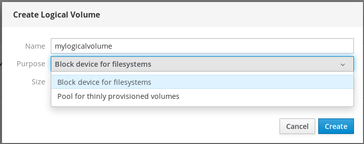
定义逻辑卷的大小。考虑：
- 使用此逻辑卷的系统需要多少空间。
- 要创建的逻辑卷数。
您不必使用整个空间。如有必要，您可以稍后增加逻辑卷。

- 单击“ 创建”
要验证设置，请单击逻辑卷并检查详细信息。
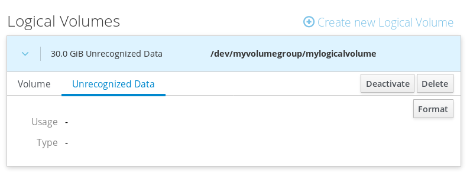
在此阶段，已创建逻辑卷，您需要使用格式化过程创建和装入文件系统。
逻辑卷充当物理驱动器。要使用它们，您需要使用文件系统格式化它们。
警告
格式化逻辑卷将清除卷上的所有数据。
您选择的文件系统确定可用于逻辑卷的配置参数。例如，某些XFS文件系统不支持缩小卷。有关详细信息，请参阅在Web控制台中调整逻辑卷大小 。
以下步骤描述了格式化逻辑卷的过程。
先决条件
- 已创建逻辑卷。有关详细信息，请参阅在Web控制台中创建卷组 。
程序
- 登录RHEL Web控制台。
- 单击存储 。
- 单击放置逻辑卷的卷组。
- 单击逻辑卷。
单击“ 无法识别的数据”选项卡。
- 单击格式 。
在“ 删除”下拉菜单中，选择：
- 不要覆盖现有数据 - RHEL Web控制台仅重写磁盘头。此选项的优点是格式化速度。
- 用零覆盖现有数据 - RHEL Web控制台用零重写整个磁盘。此选项较慢，因为程序必须通过整个磁盘。如果磁盘包含任何数据并且您需要覆盖它，请使用此选项。
在“ 类型”下拉菜单中，选择文件系统：
XFS文件系统支持大型逻辑卷，无需中断即可在线切换物理驱动器，以及扩展现有文件系统。如果您没有其他强烈偏好，请选中此文件系统。
XFS不支持减小使用XFS文件系统格式化的卷的大小
ext4文件系统支持：
- 逻辑卷
- 在线切换物理驱动器而不会中断
- 发展文件系统
- 缩小文件系统
您还可以选择具有LUKS（Linux统一密钥设置）加密的版本，该版本允许您使用密码加密卷。
- 在“ 名称”字段中，输入逻辑卷名称。
在“ 安装”下拉菜单中，选择“ 自定义” 。
“ 默认”选项无法确保在下次引导时安装文件系统。
- 在“ 挂载点”字段中，添加装载路径。
选择启动时安装 。

单击格式 。
格式化可能需要几分钟，具体取决于卷大小和选择的格式选项。
格式化成功完成后，您可以在“ 文件系统”选项卡上查看格式化逻辑卷的详细信息。

- 要使用逻辑卷，请单击“ 安装” 。
此时，系统可以使用已安装和格式化的逻辑卷。
本节介绍如何调整逻辑卷的大小。您可以扩展甚至减少逻辑卷。是否可以调整逻辑卷的大小取决于您使用的文件系统。大多数文件系统使您能够在线扩展（增长）卷（无中断）。
如果逻辑卷包含支持收缩的文件系统，您还可以减少（缩小）逻辑卷的大小。例如，它应该在ext3 / ext4文件系统中可用。
警告
您无法减少包含GFS2或XFS文件系统的卷。
先决条件
- 包含支持调整逻辑卷大小的文件系统的现有逻辑卷。
程序
以下步骤提供了在不使卷脱机的情况下扩展逻辑卷的过程：
- 登录RHEL Web控制台。
- 单击存储 。
- 单击放置逻辑卷的卷组。
- 单击逻辑卷。
- 在“ 卷”选项卡上，单击“ 增长” 。
在“ 增长逻辑卷”对话框中，调整卷空间。

- 单击“ 增长”
LVM在没有系统中断的情况下增加逻辑卷。
- 有关创建逻辑卷的更多详细信息，请参阅配置和管理逻辑卷 。
精简配置的逻辑卷使您可以为指定的应用程序或服务器分配比空间逻辑卷实际包含的空间更多的空间。
有关详细信息，请参阅精简配置的逻辑卷（精简卷） 。
以下部分描述：
以下步骤说明如何为精简配置卷创建池：
先决条件
- 卷组已创建 。
程序
- 登录RHEL 8 Web控制台。
- 单击存储 。
- 单击要在其中创建精简卷的卷组。
- 单击“ 创建新逻辑卷” 。
- 在“ 名称”字段中，输入不包含空格的新精简卷池的名称。
在“ 目的”下拉菜单中， 为精简配置的卷选择“ 池” 。使用此配置可以创建精简卷。
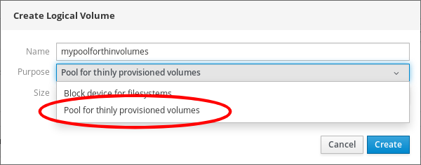
定义精简卷池的大小。考虑：
- 这个池中需要多少个精简卷？
- 每个薄卷的预期大小是多少？
您不必使用整个空间。如有必要，您可以稍后扩展池。

单击“ 创建”
已创建精简卷的池，您可以添加精简卷。
以下文本描述了在池中创建精简逻辑卷。池可以包含多个精简卷，每个精简卷可以与池本身一样大。
重要
使用精简卷需要定期检查逻辑卷的实际空闲物理空间。
先决条件
- 创建精简池的池。有关详细信息，请参阅在Web控制台中创建卷组 。
程序
- 登录RHEL 8 Web控制台。
- 单击存储 。
- 单击要在其中创建精简卷的卷组。
- 单击所需的池。
单击“ 创建精简卷” 。
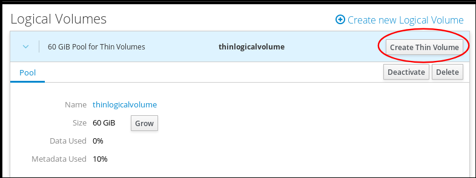
- 在“ 创建精简卷”对话框中，输入不带空格的精简卷的名称。
定义精简卷的大小。
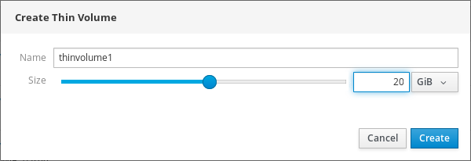
- 单击“ 创建”
在此阶段，已创建精简逻辑卷，您需要对其进行格式化。
逻辑卷充当物理驱动器。要使用它们，您需要使用文件系统格式化它们。
警告
格式化逻辑卷将清除卷上的所有数据。
您选择的文件系统确定可用于逻辑卷的配置参数。例如，某些XFS文件系统不支持缩小卷。有关详细信息，请参阅在Web控制台中调整逻辑卷大小 。
以下步骤描述了格式化逻辑卷的过程。
先决条件
- 已创建逻辑卷。有关详细信息，请参阅在Web控制台中创建卷组 。
程序
- 登录RHEL Web控制台。
- 单击存储 。
- 单击放置逻辑卷的卷组。
- 单击逻辑卷。
单击“ 无法识别的数据”选项卡。
- 单击格式 。
在“ 删除”下拉菜单中，选择：
- 不要覆盖现有数据 - RHEL Web控制台仅重写磁盘头。此选项的优点是格式化速度。
- 用零覆盖现有数据 - RHEL Web控制台用零重写整个磁盘。此选项较慢，因为程序必须通过整个磁盘。如果磁盘包含任何数据并且您需要覆盖它，请使用此选项。
在“ 类型”下拉菜单中，选择文件系统：
XFS文件系统支持大型逻辑卷，无需中断即可在线切换物理驱动器，以及扩展现有文件系统。如果您没有其他强烈偏好，请选中此文件系统。
XFS不支持减小使用XFS文件系统格式化的卷的大小
ext4文件系统支持：
- 逻辑卷
- 在线切换物理驱动器而不会中断
- 发展文件系统
- 缩小文件系统
您还可以选择具有LUKS（Linux统一密钥设置）加密的版本，该版本允许您使用密码加密卷。
- 在“ 名称”字段中，输入逻辑卷名称。
在“ 安装”下拉菜单中，选择“ 自定义” 。
“ 默认”选项无法确保在下次引导时安装文件系统。
- 在“ 挂载点”字段中，添加装载路径。
选择启动时安装 。
单击格式 。
格式化可能需要几分钟，具体取决于卷大小和选择的格式选项。
格式化成功完成后，您可以在“ 文件系统”选项卡上查看格式化逻辑卷的详细信息。
- 要使用逻辑卷，请单击“ 安装” 。
此时，系统可以使用已安装和格式化的逻辑卷。
以下文本介绍了如何使用RHEL 8 Web控制台更改卷组中的驱动器。
物理驱动器的更改包括以下过程：
RHEL 8 Web控制台使您可以将新物理驱动器或其他类型的卷添加到现有逻辑卷。
先决条件
- 必须创建卷组。
- 连接到机器的新驱动器。
程序
- 登录RHEL 8 Web控制台。
- 单击存储 。
- 在“ 卷组”框中，单击要在其中添加物理卷的卷组。
在“ 物理卷”框中，单击“ +”图标。
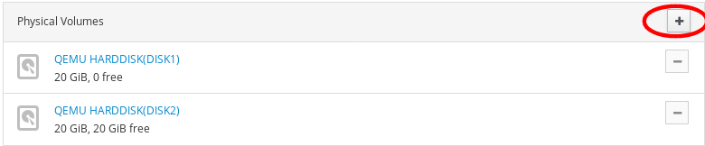
在“ 添加磁盘”对话框中，选择首选驱动器，然后单击“ 添加” 。
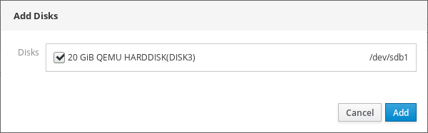
因此，RHEL 8 Web控制台会添加物理卷。您可以在Physical Volumes部分中看到它，逻辑卷可以立即开始在驱动器上写入。
如果逻辑卷包含多个物理驱动器，则可以在线删除其中一个物理驱动器。
在删除过程中，系统会自动将要从驱动器中删除的所有数据移动到其他驱动器。请注意，它可能需要一些时间。
如果有足够的空间来移除物理驱动器，Web控制台也会验证。
先决条件
- 连接了多个物理驱动器的卷组。
程序
以下步骤描述如何从卷组中删除驱动器，而不会导致RHEL Web控制台中断。
- 登录RHEL 8 Web控制台。
- 单击存储 。
- 单击具有逻辑卷的卷组。
- 在“ 物理卷”部分中，找到首选卷。
单击-图标。
RHEL 8 Web控制台验证逻辑卷是否有足够的可用空间来移除磁盘。如果没有，则无法删除磁盘，因此必须先添加另一个磁盘。有关详细信息，请参阅在Web控制台中将物理驱动器添加到逻辑卷 。
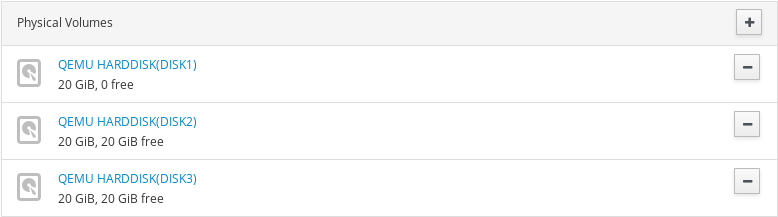
作为结果，RHEL 8 Web控制台从创建的逻辑卷中删除物理卷而不会导致中断。
本章介绍使用RHEL 8 Web控制台的虚拟数据优化器（VDO）配置。阅读后，您将能够：
- 创建VDO卷
- 格式化VDO卷
- 扩展VDO卷
RHEL 8 Web控制台已安装并可访问。
有关详细信息，请参阅安装Web控制台 。
红帽企业Linux 8支持虚拟数据优化器（VDO）。VDO是一种块虚拟化技术，它结合了：
- 压缩
- 有关详细信息，请参阅在VDO中启用或禁用压缩 。
- 重复数据删除
- 有关详细信息，请参阅在VDO中启用或禁用重复数据删除 。
- 精简配置
- 有关详细信息，请参阅精简配置的逻辑卷（精简卷） 。
使用这些技术，VDO：
- 内联存储空间
- 压缩文件
- 消除重复
- 使您能够分配比物理或逻辑存储提供的虚拟空间更多的虚拟空间
- 使您能够通过增长来扩展虚拟存储
可以在许多类型的存储之上创建VDO。在RHEL 8 Web控制台中，您可以在以下位置配置VDO：
LVM
注意
无法在精简配置卷上配置VDO。
- 物理量
- 软件RAID
有关将VDO放置在存储堆栈中的详细信息，请参阅系统要求 。
其他资源
- 有关VDO的详细信息，请参阅重复数据删除和压缩存储 。
本节帮助您在RHEL Web控制台中创建VDO卷。
先决条件
- 要从中创建VDO的物理驱动器，LVM或RAID。
程序
登录RHEL 8 Web控制台。
有关详细信息，请参阅登录Web控制台 。
- 单击存储 。
单击“ VDO设备”框中的+图标。

- 在“ 名称”字段中，输入不带空格的VDO卷的名称。
- 选择要使用的驱动器。
在“ 逻辑大小”栏中，设置VDO卷的大小。您可以将其扩展十次以上，但请考虑创建VDO卷的目的：
- 对于活动VM或容器存储，请使用十倍于卷的物理大小的逻辑大小。
- 对于对象存储，请使用三倍于卷的物理大小的逻辑大小。
有关详细信息，请参阅部署VDO 。
在“ 索引内存”栏中，为VDO卷分配内存。
有关VDO系统要求的详细信息，请参阅系统要求 。
选择“ 压缩”选项。此选项可以有效地减少各种文件格式。
有关详细信息，请参阅在VDO中启用或禁用压缩 。
选择“ 重复数据删除”选项。
此选项通过消除重复块的多个副本来减少存储资源的消耗。有关详细信息，请参阅在VDO中启用或禁用重复数据删除 。
- [可选]如果要将VDO卷用于需要512字节块大小的应用程序，请选择“ 使用512字节仿真” 。这会降低VDO卷的性能，但应该很少需要。如有疑问，请将其关闭。
单击“ 创建”

如果创建VDO卷的过程成功，您可以在“ 存储”部分中查看新的VDO卷，并使用文件系统对其进行格式化。

VDO卷充当物理驱动器。要使用它们，您需要使用文件系统格式化它们。
警告
格式化VDO将清除卷上的所有数据。
以下步骤描述了格式化VDO卷的过程。
先决条件
- 创建VDO卷。有关详细信息，请参阅“在Web控制台中创建VDO卷”一节 。
程序
登录RHEL 8 Web控制台。
有关详细信息，请参阅登录Web控制台 。
- 单击存储 。
- 单击VDO卷。
- 单击“ 无法识别的数据”选项卡。
单击格式 。

在“ 删除”下拉菜单中，选择：
- 不要覆盖现有数据
- RHEL Web控制台仅重写磁盘头。此选项的优点是格式化速度。
- 用零覆盖现有数据
- RHEL Web控制台使用零重写整个磁盘。此选项较慢，因为程序必须通过整个磁盘。如果磁盘包含任何数据并且您需要重写它们，请使用此选项。
在“ 类型”下拉菜单中，选择文件系统：
XFS文件系统支持大型逻辑卷，在线连接物理驱动器而不会中断，并且不断增长。如果您没有其他强烈偏好，请选中此文件系统。
XFS不支持缩小卷。因此，您将无法减少使用XFS格式化的卷。
- ext4文件系统支持逻辑卷，在线切换物理驱动器，不会中断，增长和缩小。
您还可以选择具有LUKS（Linux统一密钥设置）加密的版本，该版本允许您使用密码加密卷。
- 在“ 名称”字段中，输入逻辑卷名称。
在“ 安装”下拉菜单中，选择“ 自定义” 。
“ 默认”选项无法确保在下次引导时安装文件系统。
- 在“ 挂载点”字段中，添加装载路径。
选择启动时安装 。
单击格式 。
格式化可能需要几分钟，具体取决于使用的格式选项和卷大小。
成功完成后，您可以在“ 文件系统”选项卡上查看格式化的VDO卷的详细信息。

- 要使用VDO卷，请单击“ 安装” 。
此时，系统使用已安装和格式化的VDO卷。
本节介绍在RHEL 8 Web控制台中扩展VDO卷。
先决条件
- 已创建VDO卷。
程序
登录RHEL 8 Web控制台。
有关详细信息，请参阅登录Web控制台 。
- 单击存储 。
在VDO Devices框中单击您的VDO卷。
- 在VDO卷详细信息中，单击“ 增长”按钮。
在“ VDO的增长逻辑大小”对话框中，扩展VDO卷的逻辑大小。

屏幕截图中逻辑卷的原始大小为6 GB。如您所见，RHEL Web控制台使您可以将卷增大到十倍以上，并且由于压缩和重复数据删除，它可以正常工作。
- 单击“ 增长”
如果成功生成VDO的过程成功，您可以在VDO卷详细信息中看到新大小。
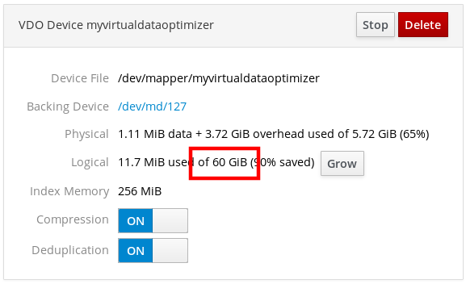